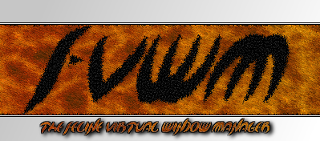
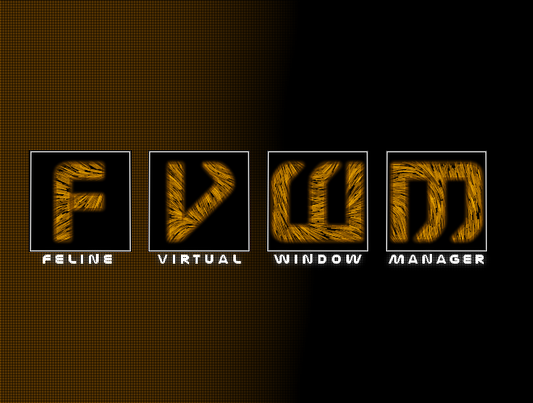

Logos by Phil Harper.
I've got some submissions for the contest, tiger might get resubmitted when I've worked out how to draw stripes on the tale that don't look crap. :)

[update] After much GIMPing around I've got a pretty good fake fur look, more realistic ears and half decent tail, enjoy.


Plain versions.

This seems to lend itself to wallpaper more than a logo, hmmm, I might try that later... Disclaimer: 100% Synthetic, no tigers were harmed during the production of this logo. ;)

hi, here's yet another logo design, it's done entirely in SVG and it's really the first time i've used Sodipodi for anything i've shown to people(that a good enough excuse?). i thought i'd better do something more logo'ish since the competition is getting very impressive.




More FVWM related art by this artist:
 TigerSkin FVWM Wallpaper (GPL'd source)
TigerSkin FVWM Wallpaper (GPL'd source)
 TigerSkin FVWM Wallpaper (Black Stripes)
TigerSkin FVWM Wallpaper (Black Stripes)
 SynthSkin FVWM Wallpaper on deviantART
SynthSkin FVWM Wallpaper on deviantART
 Another Skin Variation Wallpaper
Another Skin Variation Wallpaper